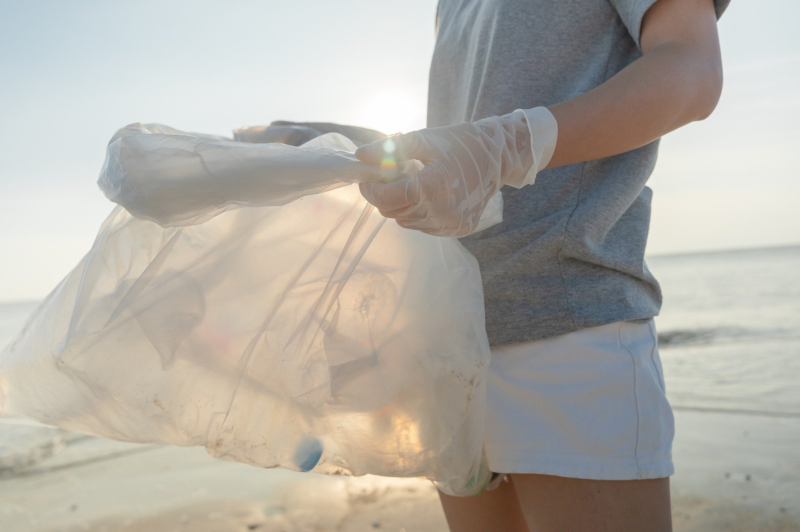
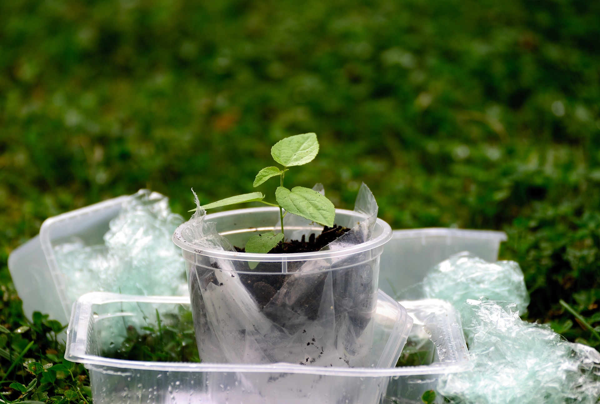
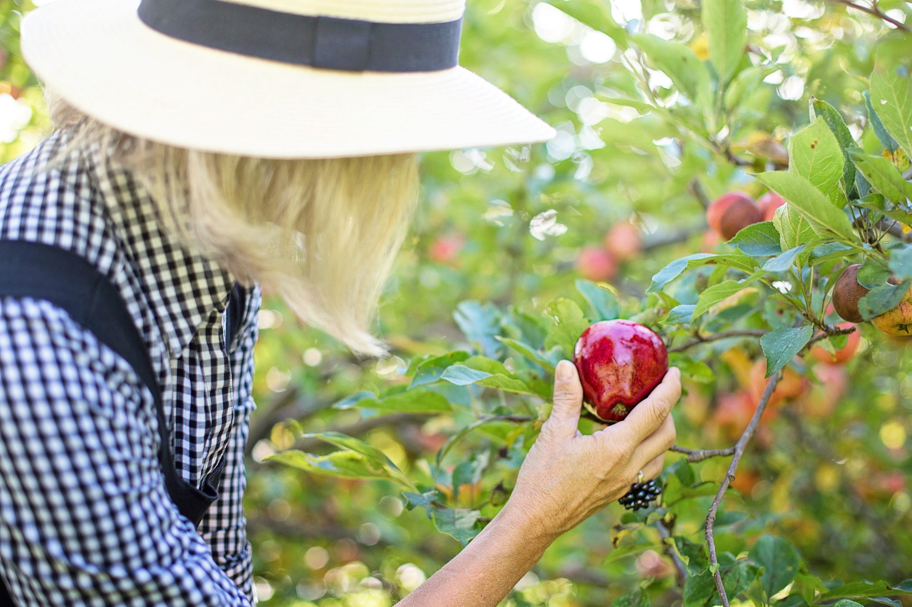

Blu Oceano
Il nostro progetto “Blu Oceano” si concentra sull’eliminazione dei rifiuti
plastici e dei detriti nelle acque degli oceano. Per farlo, collaboriamo con organizzazioni locali, scienziati marini e
volontari per organizzare operazioni di raccolta di plastica dalle spiagge e dalle acque, in particolare nelle aree più critiche.
In questi anni, siamo riusciti a rimuovere centinaia di tonnellate di plastica dal mare, riducendo il danno agli ecosistemi
marini e alle specie che vivono nell'oceano. Utilizziamo anche tecnologie innovative, come droni e imbarcazioni specializzate,
per monitorare e raccogliere rifiuti in aree più difficili da raggiungere
Verde Foresta

Con il progetto “Verde Foresta” lavoriamo
a stretto contatto con le comunità locali per piantare alberi e ripristinare gli ecosistemi forestali danneggiati.
Ogni albero che piantiamo non è solo un passo verso la riduzione della CO2 nell’atmosfera, ma è anche una
risorsa fondamentale per la biodiversità del luogo e per il benessere delle comunità che dipendono dalle foreste per
il loro sostentamento.
Inoltre, promuoviamo iniziative di conservazione forestale per prevenire la deforestazione illegale e la distruzione
di habitat naturali, lavorando con autorità locali e aziende per creare corridoi ecologici e aree protette.
Grigio Plastica
Per combattere l’inquinamento da plastica, uno dei problemi che
più sta pressando la nostra società, ci impegniamo a promuovere iniziative nazionali e internazionali
per conoscere più da vicino questo materiale, ormai presente ovunque nelle nostre vite, e ridurre il
più possibile l’utilizzo della plastica monouso.
Collaboriamo con imprese, scuole e governi per implementare politiche di riduzione e per trovare alternative
alla plastica con materiali biodegradabili e sostenibili. Ogni piccola azione, come ridurre l’uso
della plastica nelle nostre vite quotidiane, ha un impatto positivo su oceani e foreste.
L’Ambiente Sono IO
Con l’appoggio di realtà locali (come Pro Loco, scuole, università e
associazioni di quartiere), negli ultimi anni siamo riusciti a lanciare il progetto “L’ambiente
sono IO”: un programma educativo divertente e coinvolgente per adulti e ragazzi che punta a sensibilizzare
soprattutto le scuole, le università e le comunità locali sull’importanza della conservazione dell’ambiente.
Grazie a laboratori, conferenze, campagne di sensibilizzazione e azioni di pulizia comunitaria, non solo
diamo ai partecipanti degli strumenti semplici e utili per ridurre l’inquinamento e proteggere gli
ecosistemi (anche quello cittadino), ma li facciamo anche partecipare attivamente e concretamente per mostrare
loro che il cambiamento è davvero possibile.